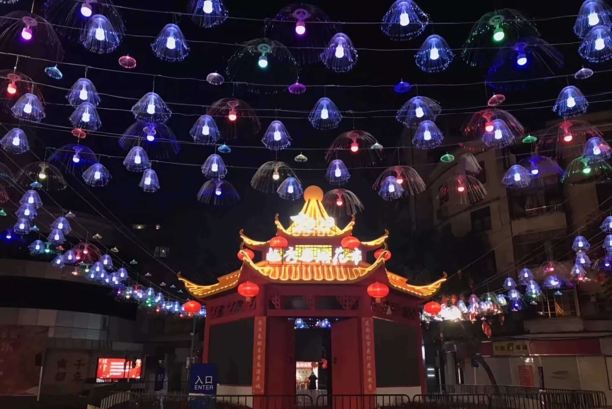
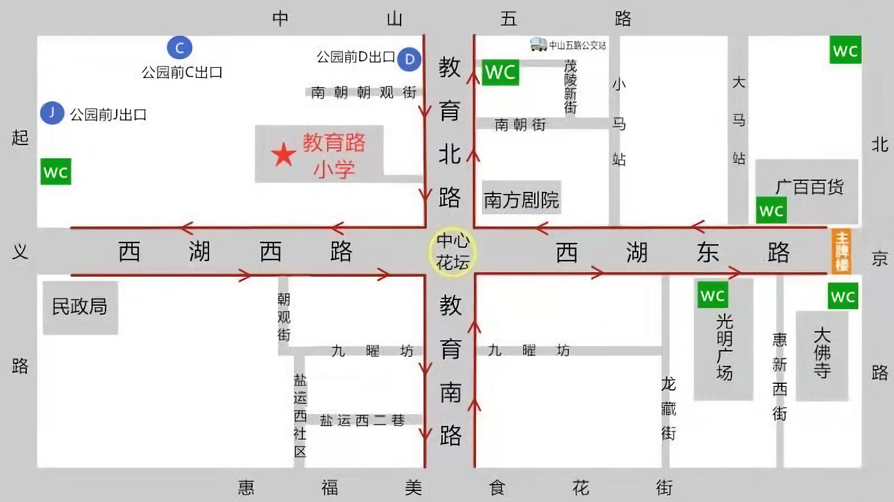

迎春花

加载中...
1月23日晚，广东省启动重大突发公共卫生事件一级响应。今日，广州各区花市办已要求所有花市档口经营者戴口罩， 为做好防护措施，并通知花市志愿者取消志愿活动。今年，受疫情影响，广州传统花市将提前于1月24日18时前结束。
1月22日9点，一年一度的越秀西湖花市，就要开锣啦!今年，西湖花市共设置163个档位，1月22日9:00-1月25日凌晨2:00(其中1月22日、23日两天至晚上24:00时，1月24日至25日凌晨2:00时)在越秀区西湖路、教育路举行，为期3天。
平面图
